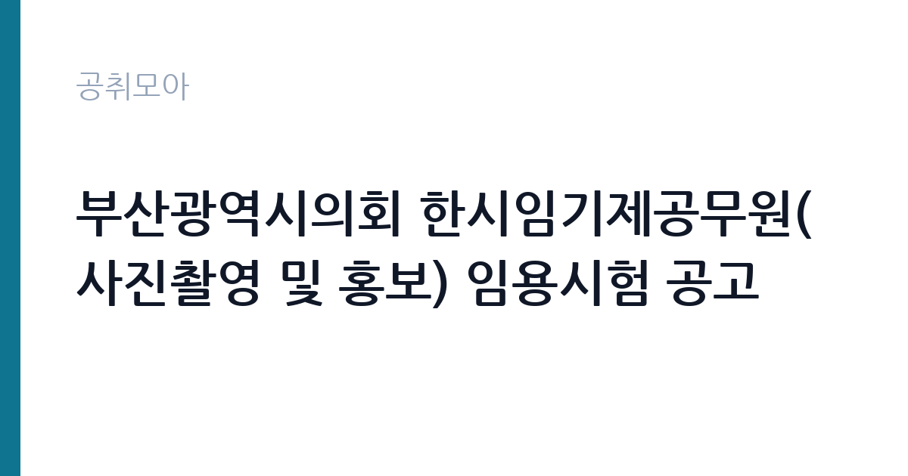

[지자체] 부산광역시의회 한시임기제공무원(사진촬영 및 홍보) 임용시험 공고
부산광역시 의회사무처 · 부산 · 마감 2026-10-27 (D-12) · 출처 나라일터

한눈에 보는 모집 조건
| 기관 | 부산광역시 의회사무처 |
|---|---|
| 공고명 | 부산광역시의회 한시임기제공무원(사진촬영 및 홍보) 임용시험 공고 |
| 고용형태 | 임기제 |
| 근무지 | 부산 |
| 게시일 | 2026-10-16 |
| 마감일 | 2026-10-27 (D-12) |
지원자격, 이렇게 읽으세요
- 한시임기제 8호 1명
- 접수 ~2026-10-27 마감
- 세부 조건은 원문 공고문 확인
한시임기제 8호는 사진촬영과 홍보 실무 경력을 보는 자리입니다. 직무기술서와 응시자 제출서류 파일이 별도로 첨부되어 있으니 나라일터 요약만 보고 판단하지 마시고 세 파일을 모두 내려받아 읽으셔야 합니다. 사진 관련 전공이나 언론사, 공공기관 홍보 경력이 있으면 유리하며 포트폴리오 제출 방식이 서류의 당락을 가를 가능성이 큽니다. 휴직 공무원의 결원을 메우는 성격이라 임용 후 의회 일정에 맞춰 바로 실무에 투입될 수 있는지가 중요합니다.
이 공고의 포인트
이 공고의 매력은 지방의회라는 안정적인 조직에서 본인의 촬영 실력을 온전히 발휘할 수 있다는 점입니다. 의정활동 촬영은 본회의와 상임위, 현장 방문 등 스케줄이 정해져 있어 프리랜서보다 일정이 예측 가능하고 결과물이 공식 기록으로 남는 보람이 있습니다. 부산 연제구 의회 청사 근무로 지역 기반 촬영자에게는 통근 부담이 적습니다. 임용기간이 약 1년으로 못 박혀 있다는 점은 지원 전에 반드시 받아들여야 할 조건입니다.
전형은 어떻게 진행되나
원서접수는 10월 22일부터 10월 27일까지 나흘로 짧습니다. 직무기술서와 제출서류 양식이 hwpx로 제공되니 미리 내려받아 작성 연습을 해두시기 바랍니다. 전형은 서류전형 후 면접시험 순으로 진행되며 세부 일정은 부산광역시의회 공고 제2026-13호 원문에서 확인하셔야 합니다. 담당 부서는 의정정책관 인사팀이며 연락처 051-888-8334가 공개되어 있으니 접수 방법에 의문이 있으면 문의하시기 바랍니다.
이런 분께 추천해요
- 의회와 공공기관의 행사 촬영 경력을 쌓고 싶은 사진 전문가께 적합합니다.
- 보도사진이나 홍보 영상 제작 실무를 해본 분께 권합니다.
- 부산 거주로 통근이 가능하고 1년 임기 조건을 수용할 수 있는 분께 잘 맞습니다.
지원 전 체크리스트
- 직무기술서 pdf에서 요구 경력과 우대사항을 모두 확인했습니다.
- 포트폴리오 제출 규격과 분량이 있는지 제출서류 양식에서 확인했습니다.
- 접수 기간이 나흘뿐이라 접수 첫날 제출을 목표로 서류를 준비했습니다.
- 임용기간과 연장 조건을 확인하고 본인 일정과 맞는지 판단했습니다.
모집 일정과 제출 타이밍
공고 등록일은 10월 16일이며 원서는 10월 22일부터 10월 27일까지 접수합니다. 접수 창구가 나흘에 불과하므로 직무기술서 분석과 포트폴리오 선별을 접수 전에 마쳐두셔야 합니다. 임용은 2026년 12월 중이며 근무는 2027년 12월 31일까지입니다. 휴직 공무원의 복직 등 사유가 생기면 1년 6개월 범위에서 기간이 조정될 수 있다는 단서도 있으니 원문 문구를 그대로 확인하시기 바랍니다.
직무 이해하기: 지자체
의정활동 사진촬영과 홍보 업무는 본회의와 상임위원회, 행정사무감사와 현장 의정활동의 기록이 중심입니다. 본회의장 촬영은 플래시 사용 제한과 지정 위치 준수가 원칙이라 사전 리허설과 의전팀 협의가 필수이며 상임위 속기용 촬영은 발언자 위주로 빠르게 남겨야 합니다. 촬영 후에는 보도자료용 사진 선별과 보정, 의회 누리집과 보도자료 배포까지 이어지므로 마감 대응 속도가 실무 능력으로 평가됩니다. 회기 중에는 야간과 주말 촬영이 발생할 수 있어 체력 안배도 필요합니다.
자기소개서 작성 팁
촬영직 응시서류에서는 장비 나열보다 결과물로 증명하셔야 합니다. 본회의처럼 제약이 큰 현장에서 어떤 위치와 설정으로 핵심 장면을 건졌는지를 사례로 쓰시면 실력이 드러납니다. 홍보 관점에서는 촬영물이 보도자료 채택이나 조회수에 기여했던 경험을 숫자와 함께 적으시기 바랍니다. 의회 지원 동기에는 의정 기록의 공공성과 중립성에 대한 이해를 보여주시면 좋습니다. 포트폴리오는 대표작 위주로 선별해 제출 규격에 맞추시는 것이 중요합니다.
면접 준비 포인트
면접에서는 촬영 실무 판단력을 묻는 질문이 나옵니다. 조명이 어두운 본회의장에서 흔들림 없이 찍는 방법이나 돌발 상황에서 앵글을 바꾸는 기준 같은 현장 질문에 본인의 원칙으로 답하시기 바랍니다. 의회 홍보의 특성을 묻는다면 기록의 공정성과 중립 의무를 언급하시면 좋습니다. 1년 임기와 회기 중 야간 촬영 가능 여부에 대한 질문에는 현실적인 근무 가능 범위를 솔직하게 밝히시는 것이 좋습니다.
급여·근무조건 읽는 법
보수는 지방공무원 보수규정의 임기제 연봉 기준을 따릅니다. 법제처 국가법령정보센터에 게시된 지방공무원보수규정 별표 13에 따르면 8급 상당 임기제공무원의 연봉은 하한 44,296천원부터 상한 62,096천원까지이며 실제 연봉은 경력 환산 결과에 따라 이 범위에서 결정됩니다. 출처는 2026년 1월 2일 개정된 지방공무원보수규정 별표이며 한시임기제의 세부 지급 방식은 원문 공고와 의회 문의로 확인하셔야 합니다. 월 환산 추정치만으로 판단하지 마시고 연봉제 기준의 기본연봉과 성과연봉 구조를 염두에 두시기 바랍니다. 경쟁률과 합격선은 공개되지 않았습니다.
자주 묻는 질문
- 한시임기제와 일반임기제의 차이가 무엇인가요?
한시임기제는 휴직과 파견 같은 일시적 결원을 메우기 위해 임용 기간을 정해 뽑는 형태입니다. 이번 자리는 임용일로부터 2027년 12월 31일까지이며 사유 발생 시 1년 6개월 범위에서 조정될 수 있습니다. - 사진 전공이 아니어도 지원할 수 있나요?
직무기술서에 적힌 자격요건을 충족하면 전공 제한 없이 지원할 수 있습니다. 다만 촬영 실무 경력과 포트폴리오가 사실상 당락을 가리므로 직무기술서 파일을 먼저 확인하시기 바랍니다. - 근무 기간이 끝나면 어떻게 되나요?
임용 기간 만료로 관계가 종료되는 것이 원칙입니다. 연장 단서가 있으나 휴직 공무원의 복직 등 사유에 따른 것이므로 정규직 전환을 기대하고 지원하시면 안 됩니다.
함께 보면 좋은 공고
[지자체] 2026년 제10회 경기도의회 임기제공무원 임용시험 공고 — 마감 2026-10-28[지자체] 2026년 제8회 청주시 임기제공무원 채용시험시행 공고(단속행정, 교통전문) — 마감 2026-10-28[지자체] 2026년도 제9회 전북특별자치도의회 일반임기제공무원 임용시험 계획 공고 — 마감 2026-10-30출처: 나라일터 공개정보를 바탕으로 공취모아가 정리한 안내글입니다. 모집 조건·일정은 변경될 수 있으니 지원 전 반드시 원문 공고문을 확인하세요. 본 글은 정보 제공용이며 합격을 보장하지 않습니다.